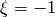
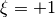

Bardell’s Hierarchical Functions¶
Bardell (1991) [bardell1991] proposed a very convinient set of approximation functions based on hierarchical polynomials. The convenience comes from the fast convergence and from the easiness to simulate practically any type of boundary conditions.
The boundary condition is controlled by the first 4 terms of the approximation function, herein defined as:
t1: the translation at extremity 1 ()r1: the rotation at extremity 1t2: the translation at extremity 2 ()r2: the rotation at extremity 2
The following code can be used to generate the Bardell functions for a given
number of terms nmax. The substitution replace('**', '^') aims to
create an input to Mathematica.
from __future__ import division
import numpy as np
from sympy import var, factorial, factorial2, sympify
nmax = 40
xi = var('xi')
var('t1, r1, t2, r2')
u = map(sympify, ['1/2 - 3/4*xi + 1/4*xi**3',
'1/8 - 1/8*xi - 1/8*xi**2 + 1/8*xi**3',
'1/2 + 3/4*xi - 1/4*xi**3',
'-1/8 - 1/8*xi + 1/8*xi**2 + 1/8*xi**3'])
for r in range(5, nmax+1):
utmp = []
for n in range(0, r//2+1):
den = 2**n*factorial(n)*factorial(r-2*n-1)
utmp.append((-1)**n*factorial2(2*r - 2*n - 7)/den * xi**(r-2*n-1))
u.append(sum(utmp))
u[0] = t1*u[0]
u[1] = r1*u[1]
u[2] = t2*u[2]
u[3] = r2*u[3]
with open('bardell.txt', 'w') as f:
f.write("Bardell's hierarchical functions\n\n")
f.write('Number of terms: {0}\n\n'.format(len(u)))
f.write(',\n'.join(map(str, u)).replace('**', '^') + '\n\n')
The output of the code above is:
In order to calculate the displacement, strain of stress fields using Cython, the above output is not adequate due to very long integer numbers that will cause precision overflows. The code below should be used to create an input to Cython:
from __future__ import division
import numpy as np
from sympy import var, factorial, factorial2, sympify, diff
nmax = 30
xi = var('xi')
u = map(sympify, ['1./2. - 3./4.*xi + 1./4.*xi**3',
'1./8. - 1./8.*xi - 1./8.*xi**2 + 1./8.*xi**3',
'1./2. + 3./4.*xi - 1./4.*xi**3',
'-1./8. - 1./8.*xi + 1./8.*xi**2 + 1./8.*xi**3'])
for r in range(5, nmax+1):
utmp = []
for n in range(0, r//2+1):
den = 2**n*factorial(n)*factorial(r-2*n-1)
utmp.append((-1)**n*factorial2(2*r - 2*n - 7)/den * xi**(r-2*n-1)/1.)
u.append(sum(utmp))
with open('bardell_floating_point.txt', 'w') as f:
f.write("Bardell's hierarchical functions\n\n")
f.write('Number of terms: {0}\n\n'.format(len(u)))
f.write('cdef void calc_vec_f(double *f, double xi, double xi1t=1., double xi1r=1.,\n' +
' double xi2t=1., double xi2r=1.) nogil:\n')
consts = {0:'xi1t', 1:'xi1r', 2:'xi2t', 3:'xi2r'}
for i in range(len(u)):
const = consts.get(i)
if const is None:
f.write(' f[%d] = %s\n' % (i, str(u[i])))
else:
f.write(' f[%d] = %s*(%s)\n' % (i, const, str(u[i])))
f.write('\n\n')
f.write('cdef void calc_vec_fxi(double *fxi, double xi, double xi1t=1., double xi1r=1.,\n' +
' double xi2t=1., double xi2r=1.) nogil:\n')
for i in range(len(u)):
const = consts.get(i)
if const is None:
f.write(' fxi[%d] = %s\n' % (i, str(diff(u[i], xi))))
else:
f.write(' fxi[%d] = %s*(%s)\n' % (i, const, str(diff(u[i], xi))))
f.write('\n\n')
f.write('cdef double calc_f(int i, double xi, double xi1t, double xi1r,\n' +
' double xi2t, double xi2r) nogil:\n')
for i in range(len(u)):
const = consts.get(i)
f.write(' if i == %d:\n' % i)
if const is None:
f.write(' return %s\n' % str(u[i]))
else:
f.write(' return %s*(%s)\n' % (const, str(u[i])))
f.write('\n\n')
f.write('cdef double calc_fxi(int i, double xi, double xi1t, double xi1r,\n' +
' double xi2t, double xi2r) nogil:\n')
for i in range(len(u)):
const = consts.get(i)
f.write(' if i == %d:\n' % i)
if const is None:
f.write(' return %s\n' % str(diff(u[i], xi)))
else:
f.write(' return %s*(%s)\n' % (const, str(diff(u[i], xi))))
Generating the following output: